File: 000780.gt.txt (if the image is defective, simply delete all Arabic text and the line will be excluded)
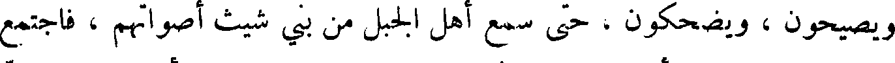
ويصيحون ، ويضحكون ، حتى سمع أهل الحبل من بنو شيث أصواتهم ، فاجتمع
File: 000781.gt.txt (if the image is defective, simply delete all Arabic text and the line will be excluded)
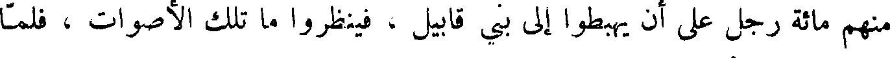
منهم مائة رجل على أن يهبطوا إلى بني قابيل ، فينظروا ما تلك الأصوات ، فلما
File: 000782.gt.txt (if the image is defective, simply delete all Arabic text and the line will be excluded)
بلغ ذلك يرد أتاهم ، فناشدهم الله ، وذكرهم وصية آبائهم ، وحلف عليهم
File: 000783.gt.txt (if the image is defective, simply delete all Arabic text and the line will be excluded)
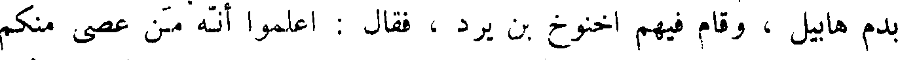
بدم هابيل ، وقام فيهم اخنوخ بن يرد ، فقال : اعلموا أنه من عصى منكم
File: 000784.gt.txt (if the image is defective, simply delete all Arabic text and the line will be excluded)
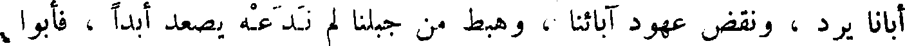
أبانا يرد ، ونقض عهود آبائنا ، وهبط من جبلنا لم ندعه يصعد ابدا ، فأبوا
File: 000785.gt.txt (if the image is defective, simply delete all Arabic text and the line will be excluded)
إلا أن يهبطوا ، فلما هبطوا اختلطوا ببنات قابيل ، بعد أن ركبوا الفواحش .
File: 000786.gt.txt (if the image is defective, simply delete all Arabic text and the line will be excluded)
فلما دنا موت يرد اجتمع إليه نوه وبنو بنيه اخنوخ ، ومتوشلح ، ولمك ،
File: 000787.gt.txt (if the image is defective, simply delete all Arabic text and the line will be excluded)
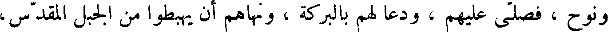
ونوح ، فصلى عليهم ، ودعا لهم بالبركة ، ونهاهم أن يهبطوا من الجبل المقدس ،
File: 000788.gt.txt (if the image is defective, simply delete all Arabic text and the line will be excluded)
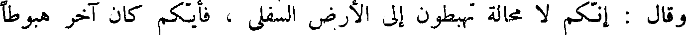
وقال : إنكم لا محالة تهبطون إلى الأرض السفلى ، فأيكم كان آخر هبوطا
File: 000789.gt.txt (if the image is defective, simply delete all Arabic text and the line will be excluded)
فليهبط بجسد أبينا آدم ، ثم ليجعله وسط الأرض ، كما أوصانا ، وأمر اخنوخ
File: 000790.gt.txt (if the image is defective, simply delete all Arabic text and the line will be excluded)
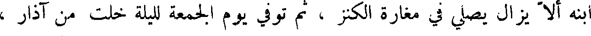
ابنه إلا يزال يصلي في مغارة الكنز ، ثم توفي يوم الجمعة لليلة خلت من آذار ،
File: 000791.gt.txt (if the image is defective, simply delete all Arabic text and the line will be excluded)
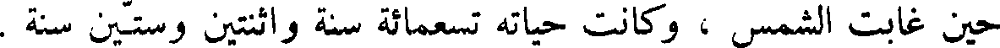
حين غابت الشمس ، وكانت حياته تسعمائة سنة واثنتين وستين سنة .
File: 000792.gt.txt (if the image is defective, simply delete all Arabic text and the line will be excluded)
اخنوخ بن يرد
File: 000793.gt.txt (if the image is defective, simply delete all Arabic text and the line will be excluded)
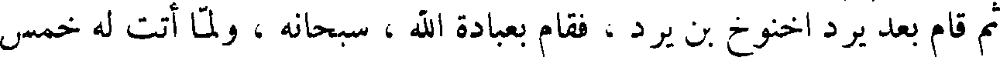
ثم قام بعد يرد اخنوخ بن يرد ، فقام بعبادة الله ، سبحانه ، ولما أتت له خمس
File: 000794.gt.txt (if the image is defective, simply delete all Arabic text and the line will be excluded)
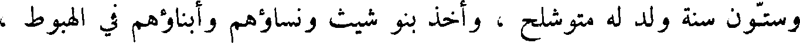
وستون سنة ولد له متوشلح ، وأخذ بني شيث ونساؤهم وأبناؤهم في الهبوط ،
File: 000795.gt.txt (if the image is defective, simply delete all Arabic text and the line will be excluded)
فعظم ذلك على اخنوخ ، فدعا ولده متوشلح ولمكا ونوحا ، فقال لهم : إني اعلم
File: 000796.gt.txt (if the image is defective, simply delete all Arabic text and the line will be excluded)
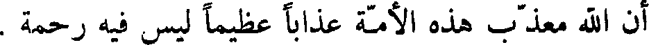
إن الله معذب هذه الأمة عذابا عظيما ليس فيه رحمة .
File: 000797.gt.txt (if the image is defective, simply delete all Arabic text and the line will be excluded)
وكان اخنوخ أول من خط بالقلم ، وهو إدريس النبي . فأوصى ولده ان
File: 000798.gt.txt (if the image is defective, simply delete all Arabic text and the line will be excluded)
يخلصوا عبادة الله ، ويستعملوا الصدق واليقين ، ثم رفعه الله بعد أن أتت له
File: 000799.gt.txt (if the image is defective, simply delete all Arabic text and the line will be excluded)
ثلاثمائة سنة .
File: 000800.gt.txt (if the image is defective, simply delete all Arabic text and the line will be excluded)
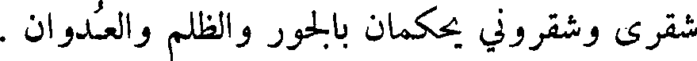
شقرى وشقروني يحكمان بالجور والظلم والعدوان .
File: 000801.gt.txt (if the image is defective, simply delete all Arabic text and the line will be excluded)
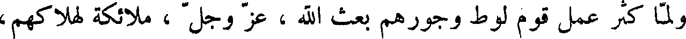
ولما كثر عمل قوم لوط وجورهم بعث الله ، عز وجل ، ملائكة لهلاكهم ،
File: 000802.gt.txt (if the image is defective, simply delete all Arabic text and the line will be excluded)
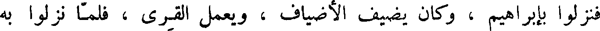
فنزلوا بإبراهيم ، وكان يضيف الأضياف ، ويعمل القرى ، فلما نزلوا به
File: 000803.gt.txt (if the image is defective, simply delete all Arabic text and the line will be excluded)
قرب إليهم عجلا مشويا ، فلما رآهم لا يأكلون نكرهم ، فعرفوه بأنفسهم ،
File: 000804.gt.txt (if the image is defective, simply delete all Arabic text and the line will be excluded)
وقالوا : أنا رسل ربك لهلاك أهل هذه القرية ، يعنون سدوم القرية التي كان فيها
File: 000805.gt.txt (if the image is defective, simply delete all Arabic text and the line will be excluded)
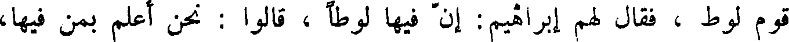
قوم لوط ، فقال لهم إبراهيم : إن فيها لوطا ، قالوا : نحن اعلم بمن فيها،
File: 000806.gt.txt (if the image is defective, simply delete all Arabic text and the line will be excluded)
لننجينه وأهله ، إلا امرأته .
File: 000807.gt.txt (if the image is defective, simply delete all Arabic text and the line will be excluded)
وكانت سارة امرأة إبراهيم واقفة ، فعجبت من قولهم ، فبشروها بإسحاق
File: 000808.gt.txt (if the image is defective, simply delete all Arabic text and the line will be excluded)
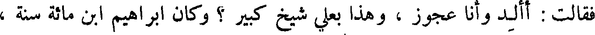
فقالت : أألد وأنا عجوز ، وهذا بعلي شيخ كبير ؟ وكان إبراهيم ابن مائة سنة ،
File: 000809.gt.txt (if the image is defective, simply delete all Arabic text and the line will be excluded)
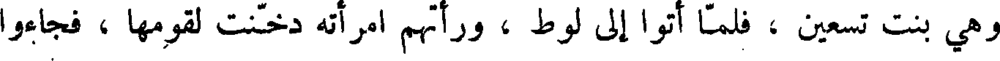
وهي بنت تسعين ، فلما أتوا إلى لوط ، ورأتهم امرأته دخنت لقومها ، فجاءوا
To Save: `Ctrl+s`, make sure to choose `Webpage, complete`!